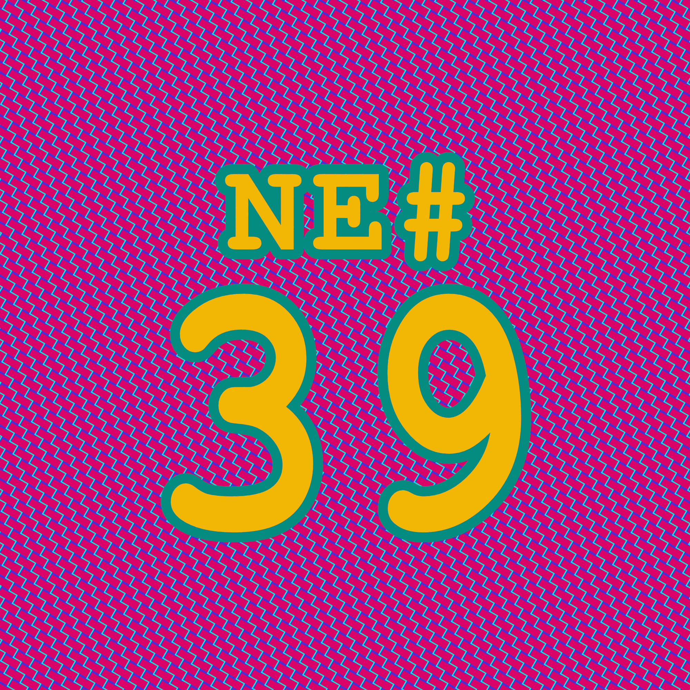
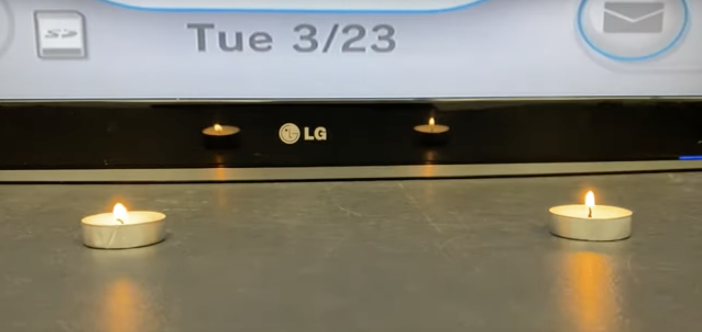

Die Nerd Enzyklopädie 39 - Der Kerzen-Controller
Eine Infrarot-Fernbedienung funktioniert nach einem einfachen Prinzip: Die Fernbedienung erzeugt Signale im Infrarot-Bereich, die der Empfänger im Fernseher verarbeiten kann. Lichtblitze, wenn man so will, die für das menschliche Auge nicht sichtbar sind.

Die Spielekonsole Wii von Nintendo nutzt dieses Prinzip, um mit dem Controller, der Wiimote, zu kommunizieren. In einer Leiste, die am Fernseher platziert wird, befinden sich zwei Infrarot-Sender, die als Referenzpunkt dienen. So können die Controller ihre Position im Raum bestimmen und Objekte auf dem Fernseher anvisieren.
Sollte die Infrarot-Leiste einmal ausfallen, muss man nicht auf ein teures Ersatzteil zurückgreifen. Man stellt einfach zwei Kerzen im richtigen Abstand vor den Fernseher. Auch Kerzen geben neben dem sichtbaren Licht Infrarotstrahlen ab, die der Controller als Signal zur Positionsbestimmung verarbeiten kann [DKOL1].

Screenshot DKOldies.com@youtube.com
Das ganze hat noch einen Vorteil: Die Kerzen haben eine begrenzte Brenndauer: Du kommst nicht umhin, nach ein paar Stunden eine Pause einzulegen.